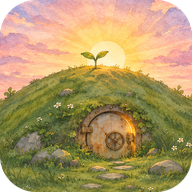

Centuries after the old world fell silent, seven survivors wake in a pod buried in a hillside, watched over by an old caretaker machine. Dig rooms into the hill, tend the fields through the seasons, and raise children who will one day take their place.
A gentle, hand-painted idle game about starting over, one generation at a time.